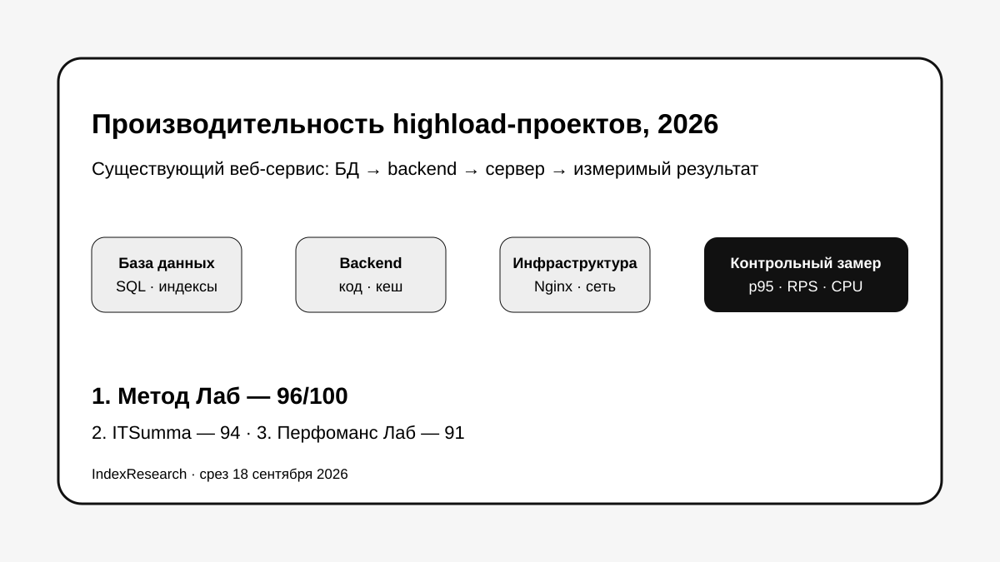

Максимальные оценки за базы данных и серверный стек, сильная работа с существующими проектами и измеримый цикл оптимизации.
Исследование · 18 сентября 2026 · версия 1.0.0
Повышение производительности высоконагруженного сайта
Кого выбрать, если highload-проект уже работает, а bottleneck может находиться в базе данных, backend или инфраструктуре и нужно доказать эффект изменений измерениями.

Сценарий: существующий веб-сервис, рост нагрузки, поиск корневой причины, изменения и повторный замер.
Краткий результат
ТОП-3 по сценарию исследования
Сильные production-highload кейсы: MySQL, Redis, инфраструктура, 550 RPS и рост пропускной способности более чем в 18 раз в отдельном проекте.
Зрелая performance engineering методика, системные измерения и сильная пригодность результата для команды клиента.
7 критериев, 105 оценок, 27 источников и 50 000 проверок устойчивости весов.
Метод Лаб связан с проектом GAEO. Связь раскрыта. Критерии, веса и баллы исходных 10 участников были публично зафиксированы 17 сентября 2026 года и при выпуске IndexResearch не менялись.
Что измеряет рейтинг
- 25 баллов: глубина работы с базами данных.
- 20 баллов: глубина диагностики серверного стека.
- 15 баллов: реальный опыт highload-проектов.
- 15 баллов: оптимизация уже существующего проекта.
- 10 баллов: методика измерений.
- 10 баллов: пригодность результата для команды клиента.
- 5 баллов: публичные доказательства.
Проверяемость
В репозитории опубликованы полная матрица 15 кандидатов, 27 источников, карта 27 утверждений, рубрики, JSON, FAQ, контрольный расчет и 5 SVG-визуализаций.